能力
Slay.one 中的能力是玩家分配点数的技能或被动加成。分配给一种能力的点数越多，它就越有效。玩家最多可以分配12能力点。
能力列表
主动能力
这些能力必须激活才能生效。一旦使用了某些技能，就会有一个冷却时间，阻止玩家使用该技能。玩家一次最多只能携带2个主动能力。主动能力需要一定能量才能使用。如果玩家没有足够的能量来激活它们，他们就无法激活所述能力。
| 名称 | 描述 | |
|---|---|---|
| 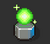 | 治愈光环 | 创造一个光环，治愈附近的单位。 |
| 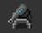 | 激光炮塔 | 创建一个用激光射击敌方单位的炮塔。 |
| 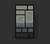 | 墙 | 创建一堵墙，阻挡路径和发射物。不过，榴弹可以射过它。 |
| 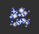 | 传送 | 在短距离内传送。传送过后，你不能在2秒内射击。 |
| 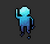 | 隐身 | 让你对于敌方单位几乎隐身。 |
| 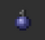 | 酸性手榴弹 | 投掷一枚酸性手榴弹，随着时间的推移会对单位和物体造成伤害。 |
| 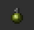 | 手榴弹 | 投掷一枚爆炸的手榴弹，对敌方单位造成重大伤害。 |
| 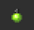 | 激光手榴弹 | 投掷一枚手榴弹，在爆炸时向各个方向发射反弹激光。 |
| 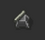 | 导弹炮塔 | 创建一个用导弹射击敌方单位的炮塔。 |
| 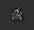 | 榴弹炮塔 | 创建一个用导弹射击敌方单位的炮塔。 |
 |
扫描 | 暂时显示小地图上的所有单位。还增加了隐形玩家的可见度。 |
| 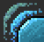 | 护盾 | 将来袭伤害降低到10。只持续一秒钟。 |
被动能力
这些能力将在不需要激活的情况下提供加成。一次可以装备多少被动能力是没有限制的。
| 名称 | 描述 | 费用 | 最高级别 | |
|---|---|---|---|---|
| 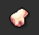 | 生命值 | 将你的最大生命值提高 6.5。 | 100 | 10 |
| 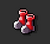 | 移动速度 | 提高你的移动速度。 | 100 | 10 |
| 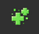 | 生命恢复 | 提高你的生命值再生速率。 | 100 | 10 |
| 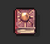 | 能量恢复 | 提高你的能量值再生速率。 | 100 | 10 |
| 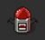 | 生命偷取 | 将你的最大生命值提高 6.5。 | 100 | 10 |
僵尸能力
| 名称 | 描述 | 能量 | 最高级别 | 费用 | 最大范围 | 需要等级 | |
|---|---|---|---|---|---|---|---|
| 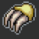 | 伤害 | 增加你的伤害。 | 0 | 10 | 100 | - | - |
| 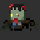 | 召唤僵尸 | 召唤一个普通僵尸。 | 40 | 5 | 100 | 5 | - |
| 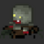 | 召唤胖僵尸 | 召唤一个胖僵尸。 | 50 | 5 | 100 | 5 | - |
 |
召唤爆破者 | 召唤一个爆破者。 | 30 | 5 | 100 | 4 | 4 |
| 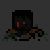 | 召唤黑暗僵尸 | 召唤一个黑暗僵尸。 | 80 | 5 | 100 | 4 | 8 |
| 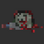 | 装死 | 装死。 | 5 | 1 | 100 | - | - |
| 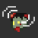 | 僵尸感应 | 显示你附近的隐形玩家。 | 0 | 3 | 100 | 5 | 4 |
移除的能力
请参见：停用的功能
将推出的功能
这些能力将被添加到游戏中。
| 名称 | 描述 | |
|---|---|---|
| 抓钩 | 这种能力可以抓住对手或抓住不可移动的方格并推动自己。 |